TERAPIA ASISTIDA POR MDMA
Si estás pensando en hacer terapia asistida MDMA, aquí tienes algunas claves
Tabla de contenidos
Sesiones con MDMA
Claudio Naranjo habla sobre la terapia con MDMA
Que el médico te recete MDMA está cada vez más cerca (Cuatro TV)
Información
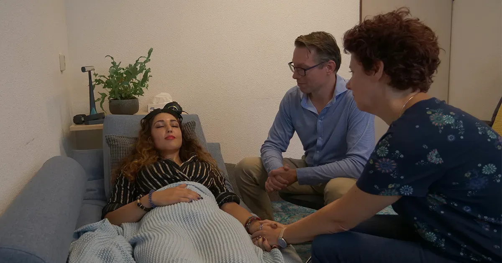
Documental “Como cambiar tu mente” – MDMA (Netflix)
Artículos
MDMA, la terapia revolucionaria de moda.
La terapia con MDMA, a punto de aprobarse en EEUU: la fecha en la que llegará a España
El Español
Australia se convierte en el primer país en aprobar el MDMA y las setas alucinógenas para tratar enfermedades de salud mental
La Sexta
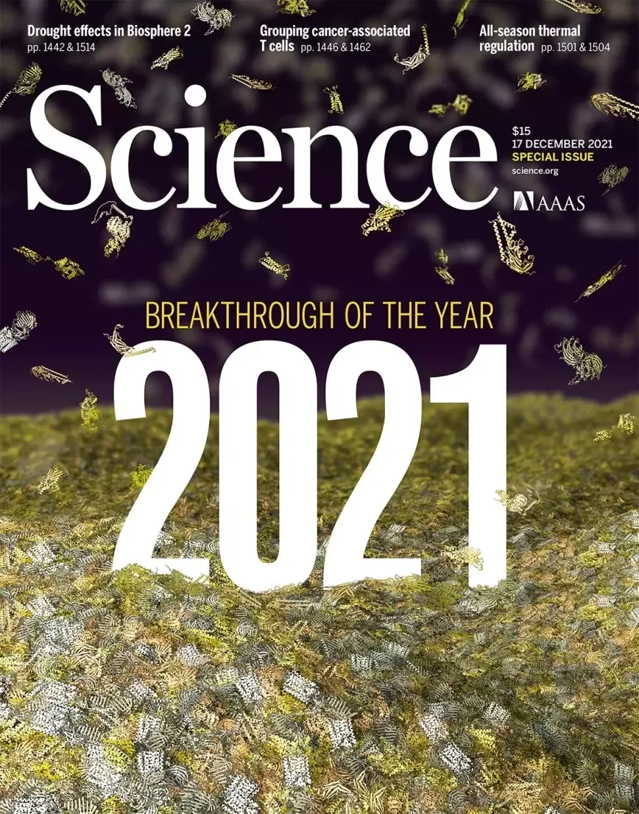
La revista Science elige la terapia con MDMA como uno de los diez principales avances científicos del 2021
Revista Science
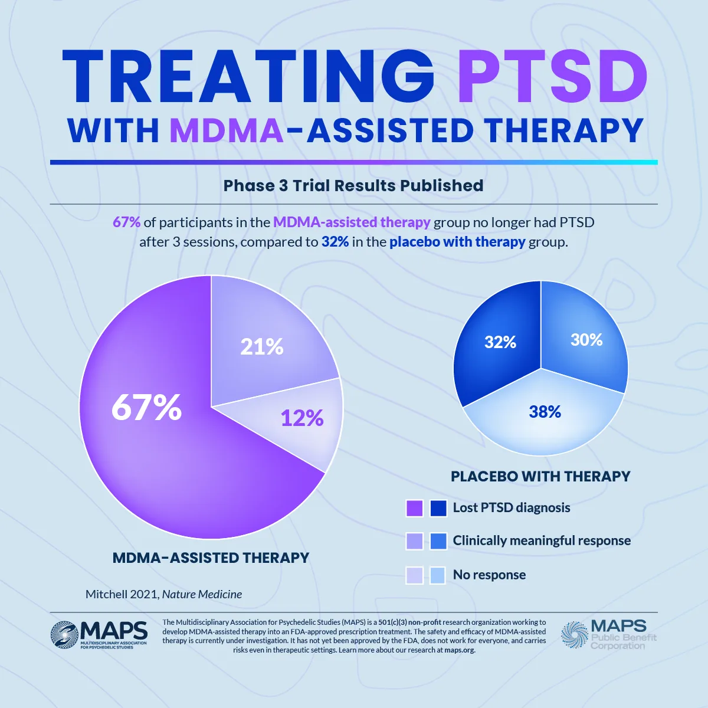
La FDA ha designado el éxtasis (MDMA) una “terapia revolucionaria” para el TEPT
C. Magazine
MEDIOS DE COMUNICACIÓN ESPAÑOLES
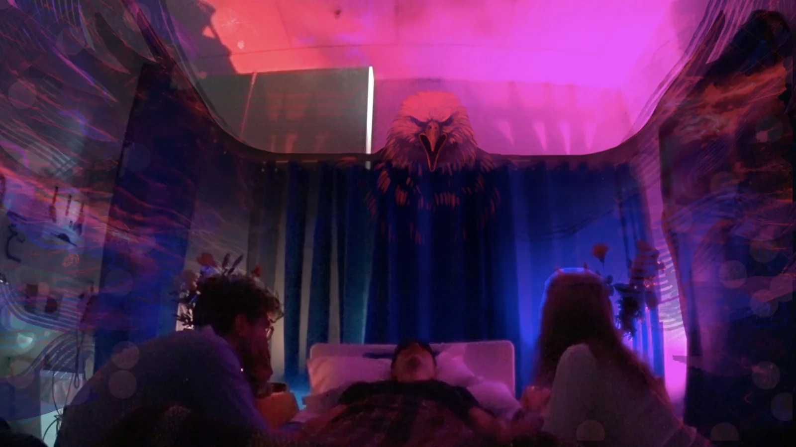
¿Una terapia con MDMA? Los expertos debaten el uso de drogas psicodélicas en tratamientos médicos
El País
Una investigación apunta que cada vez estamos más cerca de incluir el éxtasis en la psiquiatría convencional
El Mundo
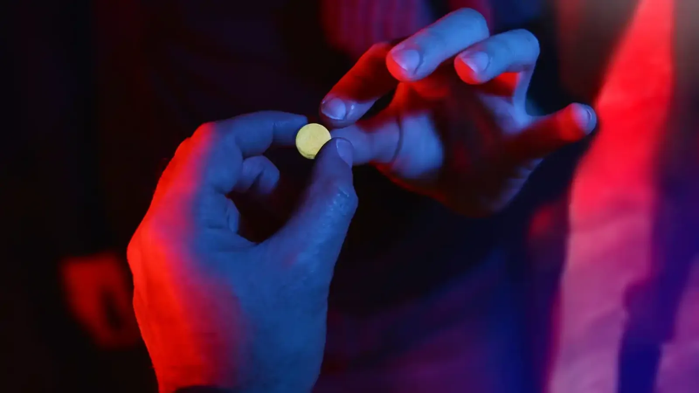
MDMA para salvar tu matrimonio: la 'droga del amor' revoluciona las terapias de pareja
El Español
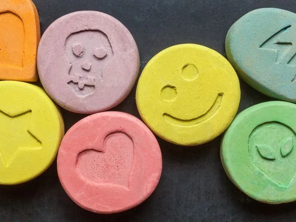
Así es como el MDMA y la psilocibina pueden revolucionar la psiquiatría
El Confidencial
MEDIOS INTERNACIONALES
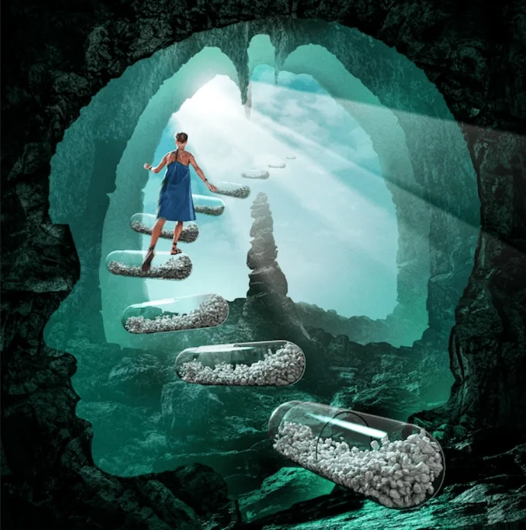
Usar MDMA, o éxtasis, para tratar la ansiedad y la depresión.
The Washington Post
Los inversores ven grandes beneficios en la medicina psicodélica
The Wall Street Journal
USOS ESTUDIADOS
Estudio demuestra que el MDMA podría ayudar en psicoterapias contra la depresión
El Mostrador
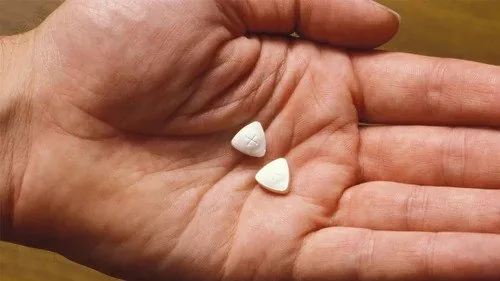
La MDMA hizo por mi ansiedad lo que no pudieron hacer los medicamentos
Vice
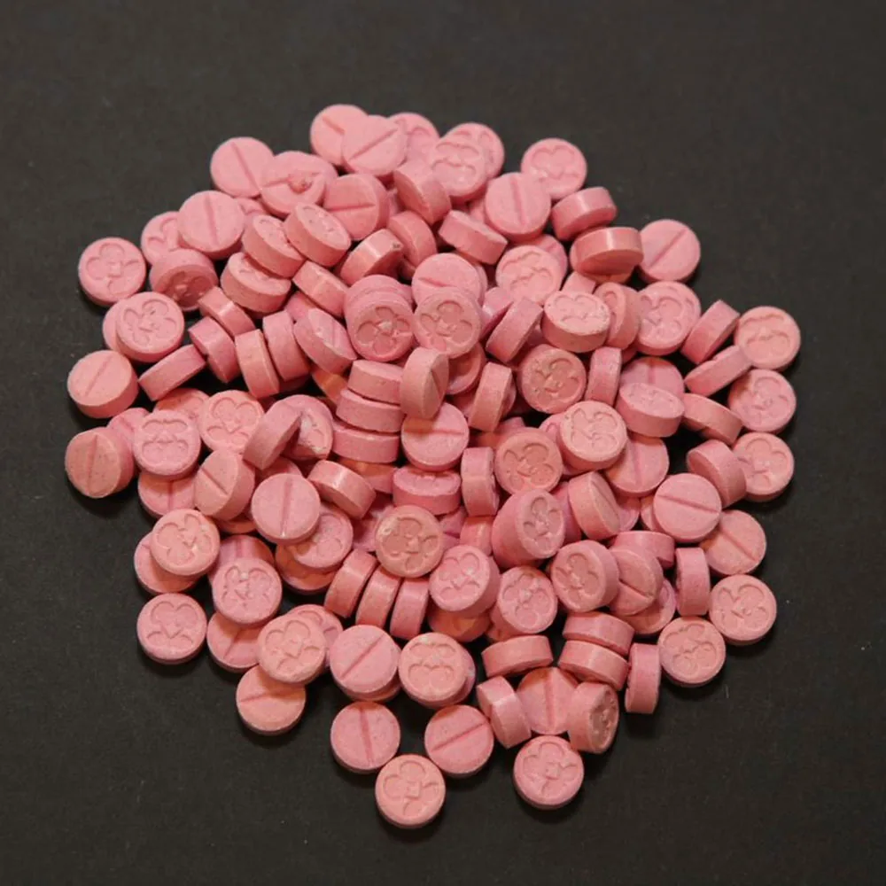
Científicos recomiendan MDMA para tratar la salud mental después del confinamiento
Mind Medicine Australia
Vídeos
Extracto de la película “MDMA The movie”
Ejemplo de terapia con MDMA, en el programa The Doctors, ganador de un premio Emmy.
Extracto del documental de National Geographic, en el que se incluye una sesión de terapia con MDMA.
OTRAS PUBLICACIONES
Sanidad da luz verde a la esketamina, primer y único tratamiento contra la depresión mayor resistente
El mundo
Libros recomendados
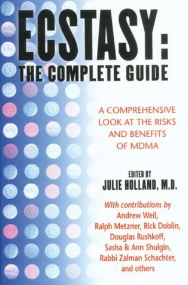
Ecstasy: The Complete Guide: A Comprehensive Look at the Risks and Benefits of MDMA
Julie Holland
Comprar: Goodreads
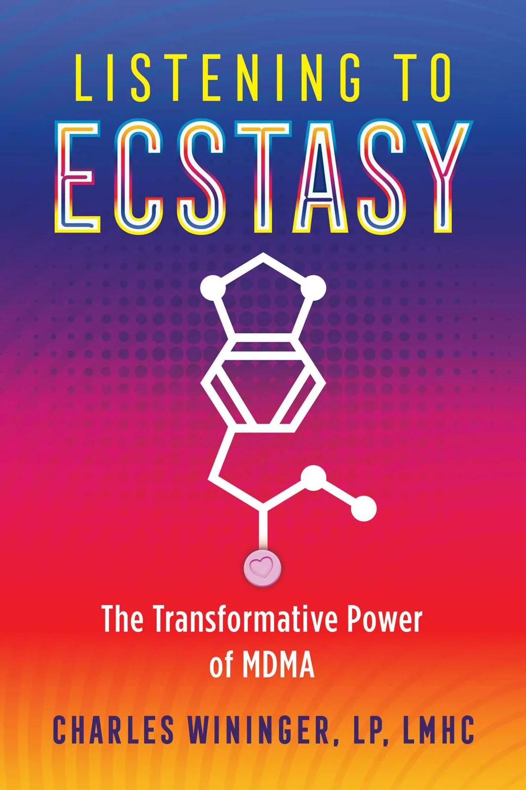
Listening to Ecstasy: The Transformative Power of MDMA
Charles Wininger
Comprar: Goodreads
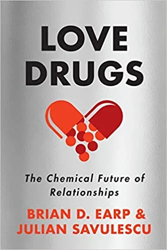
Listening to Ecstasy: The Transformative Power of MDMA
Brian D. Earp, Julian Savulescu
Comprar: Amazon
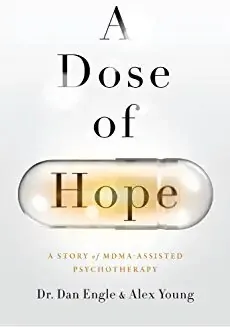
A Dose of Hope: A Story of MDMA-Assisted Psychotherapy
Dr. Dan Engle y Alex Young
Comprar: Goodreads
Listening into the Heart of Things – From the Awakening of Love: About MDMA and LSD: The Undesirable Psychotherapy
Samuel Widmer
Comprar: Goodreads